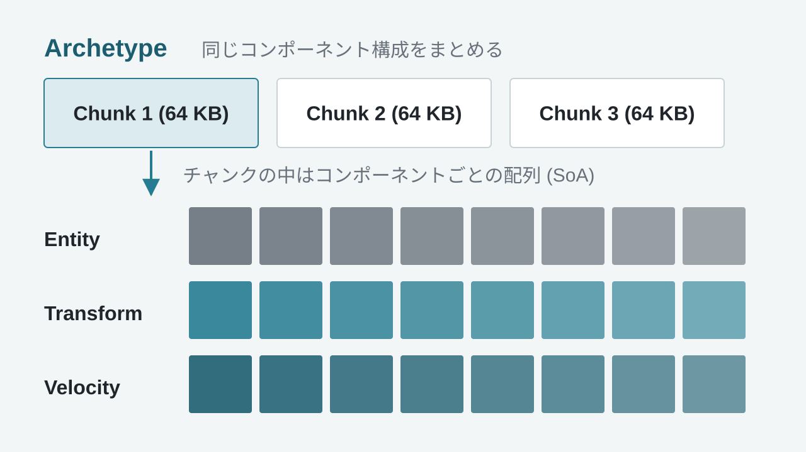

自作エンジン / 技術詳細
ECS
同じコンポーネントの組み合わせを持つエンティティを 64 KB のチャンクに並べ、システムは読み書きの宣言を書くだけで、実行順と並列化をエンジンが自動で決めるアーキタイプ型の ECS です。
01
概要
ECS とは
ECS は、データ(コンポーネント)と処理(システム)を分け、エンティティをただの ID として扱う設計です。コンポーネント 110 種、システム 131 種が動き、最終ボス「ボイドワーム」は最大 4,000 体のエンティティの群れでできています。
| 言葉 | 意味 | このエンジンでは |
|---|---|---|
| Entity | ただの ID | 64bit。下位 32bit が添え字、上位 32bit が世代 |
| Component | データだけの構造体 | memcpy で動かせる型に限定 |
| System | 条件に合うエンティティを回す処理 | 状態を持たない、無捕獲のラムダ |
| Archetype | コンポーネントの同じ組み合わせ | シグネチャ(ビット列)で表す |
| Chunk | アーキタイプごとの固定長メモリ | 64 KB、SoA |
ECS にした理由
- キャッシュ効率 : 同じ型のデータが連続して並ぶので、ループで回すときにキャッシュに乗ります。
- 並列化しやすい : システムが何を読んで何を書くかを宣言しているので、ぶつからないものを自動で並列に流せます。
- 組み合わせで作れる : 武器を手・肩・発射方式・反動などのコンポーネントに分け、プレハブで組み合わせて種類を増やしました。
02
動作動画
実際に動いている様子
03
仕組み
データの置き方

- 1チャンクに何体入るかはアーキタイプごとに1回だけ計算します。各配列の先頭をアライメントに揃え、64 KB に収まる数にします。
- 型の番号からチャンク内の配列の位置を平らな配列で引くので、ハッシュマップを引かずに届きます。
- 削除は末尾のエンティティを穴に詰める swap and pop で O(1) です。
- チャンクはフリーリストで貸し出し、空になったチャンクを1つだけ取っておいて確保と解放の繰り返しを防ぎます。
- 消した番号を使い回すたびに世代を進め、古い ID で別のエンティティを触る事故を防ぎます。
構造の変更は予約にする
- システムがチャンクを回している途中で生成・削除・付け外しをすると、配列が動いてポインタが壊れます。
- 変更は
CommandBufferに積み、次のフレームの最初にまとめて反映します。 - 付け外しによる引っ越しは、共通のコンポーネントをチャンクからチャンクへ直接コピーします。以前は一度マップへ退避していて、弾1発の一生で約 96 回のヒープ確保が起きていました。
04
実装
実行順と並列化の自動決定
システムは読む型(const)と書く型(const なし)を引数に並べるだけです。テンプレートで自動的に読み書きの宣言になります。
a_world.ActiveTask<const ModelComponent, const AnimatorComponent, const AnimatorInputComponent>(
ESystemPhase::Animation,
"AnimatorSystem",
[](Chunk*, uint32_t a_count, const SystemContext& a_ctx,
const ModelComponent* a_models, const AnimatorComponent* a_anims, const AnimatorInputComponent* a_inputs)
{
for (uint32_t i = 0; i < a_count; ++i) { /* 1体ぶんの処理 */ }
})
.After("AnimatorSystem_Rebuild") // 明示の順序
.OnWorker(); // ワーカースレッドで走らせる実行順の決め方
- 明示の順序 :
After/Beforeの指定を辺にします。 - 書いてから読む(RAW) : A が読む型を B が書くなら、B → A の辺を張ります。
- トポロジカルソート(Kahn 法)で並べます。並べきれなければ循環として、何が循環しているかをログに出します。
- 診断 : ぶつかっているのに前後が決まっていない組をプロファイラーに出し、
After/Beforeで向きを決めます。
書き同士や「読んでから書く」は、どちらが先が正しいかが処理の意味によるので自動では決めません。同時に走らせないことだけを保証し、順序は明示させます。
並列に動かす
- クエリが一致したアーキタイプをキャッシュし、新しく増えたアーキタイプだけを照合します。
- ワーカーで走るシステムは、チャンクを「チャンク数とワーカー数の小さい方」のバッチに分け、ジョブとして積みます(ジョブシステム)。
- 型がぶつかっていても、対象のアーキタイプが1つも重ならなければ同じエンティティは触らないので、待ち合わせを省きます。
- メインスレッドは待たずに次のシステムの積み込みへ進みます。
苦労したところ
- 最初は読み書きのぶつかり全部を辺にしていて、読み書きが往復する組で循環して止まりました。
- 書いてから読む組だけを辺にし、残りは明示の順序で決め、決まっていない組を診断で見えるようにして解決しました。全フェーズで循環は 0 です。
05
成果と計測
数字で見る
| 項目 | 値 |
|---|---|
| コンポーネント | 110 種 |
| システム | 131 種 |
| システムの依存の循環 | 全フェーズで 0 |
| チャンクの大きさ | 64 KB(SoA) |
| ボスの個体数 | 最大 4,000 体 |
今後の改善点
- ワーカーから構造変更の予約を積めません。スレッドごとのコマンドバッファを持てば対応できます。
- このフレームで書かれたチャンクだけを回す、変更検出がありません。
- 宣言にない読み書きを自動で見つける仕組みがありません。Debug ビルドでアクセスを記録して突き合わせたいと考えています。
06
主なコード
ソースの場所
Engine/ECS/Engine/ECS/Schedule/SystemSchedule.cppEngine/ECS/World/SystemRunner.cppEngine/ECS/Query/QueryCache.hApplication/Systems/Boid/
07
参考資料
参考にした資料
全体
- Unity DOTS を目標に、Unity の ECS の解説動画や Reddit などの掲示板を参考にしました。
仕組みと思想
アーキタイプとチャンク
応用
08
ほかの技術を見る
自作エンジンの主な技術